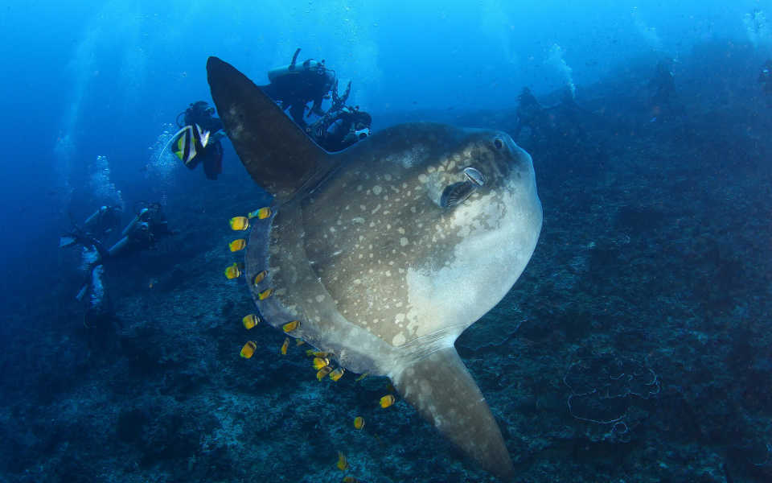
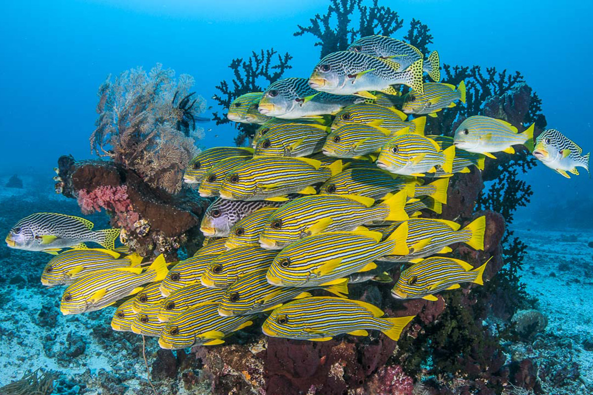
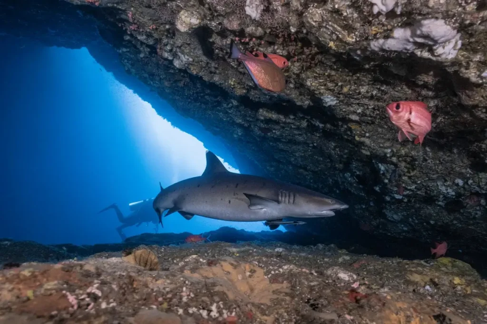

Mimpang
Es un pequeño archipiélago de cuatro grandes rocas y algunas más pequeñas, a solo unos minutos de Candidasa. Para muchos, es uno de los mejores sitios de buceo de Bali. Normalmente comenzamos la inmersión en el lado norte de la roca central, descendiendo hasta unos 18 metros. Aquí encontramos el arrecife inclinado de Mimpang, repleto de corales duros y blandos, con numerosos corales y una abundante fauna marina. La corriente habitual nos llevará a lo largo de ese arrecife hacia el oeste.
En el camino, tendremos grandes posibilidades de avistar tiburones de puntas blancas y negras, tortugas, bancos de jureles, labios dulces y muchos más. La parte poco profunda del arrecife, al sur de las islas, es simplemente mágica, con una gran variedad de peces, tortugas, crustáceos, corales duros, gorgonias y grandes esponjas barril. Este sitio de buceo suele tener muy buena visibilidad y, en temporada alta, podemos avistar molas molas. Como cualquier sitio de buceo en la bahía de Amuk, este también presenta corrientes frecuentes lo que hacer que tengamos muchisimos peces y una vida impresionante.
Tepekong
Esta es la más grande de las tres islas en las que buceamos regularmente y se alcanza en menos de 5 minutos en nuestro jukung de fibra de vidrio de 8 metros, de aspecto tradicional. Aquí podemos disfrutar de dos puntos de buceo diferentes, reservados principalmente para buceadores avanzados.
muy común ver una gran cantidad de pelágicos, incluidos tiburones, jureles, atunes, molamolas y bancos de labios dulces, peces murciélago, pargos y corredores arcoíris. Su topografía submarina, que consiste principalmente en rocas basálticas negras, cantos rodados y paredes, nos recuerda lugares del Atlántico norte.
En el extremo norte de la isla grandes rocas han formado una especie de cañón que algunos buceadores confunden con el real, sin embargo es un lugar muy interesante donde podemos encontrar mucha vida.


Biaha
Es la isla más al este y la menos frecuentada por los buceadores de la bahía de Amuk. Se encuentra justo frente a la encantadora playa de arena blanca. Gili Biaha cuenta con dos excelentes puntos de buceo: la Cueva del Tiburón y la ladera de Biaha. Sin embargo, rara vez es posible cubrir ambas zonas en una misma inmersión debido a las fuertes corrientes que a veces forman corrientes descendentes en las esquinas de las islas.
Lo más destacado de la inmersión es una cueva muy interesante cuya entrada se encuentra a tan solo 9 metros de profundidad. Aquí podremos observar tiburones de punta blanca residentes, langostas, cangrejos y vida acuática que prefiere la oscuridad. Esta inmersión es solo para buceadores experimentados; la planificamos con sumo cuidado, considerando el oleaje, la marea y las corrientes.
Tenemos más puntos de buceo y por supuesto nos adaptamos a ti!!
Contáctanos para más información
Contactar
Síguenos en nuestras redes